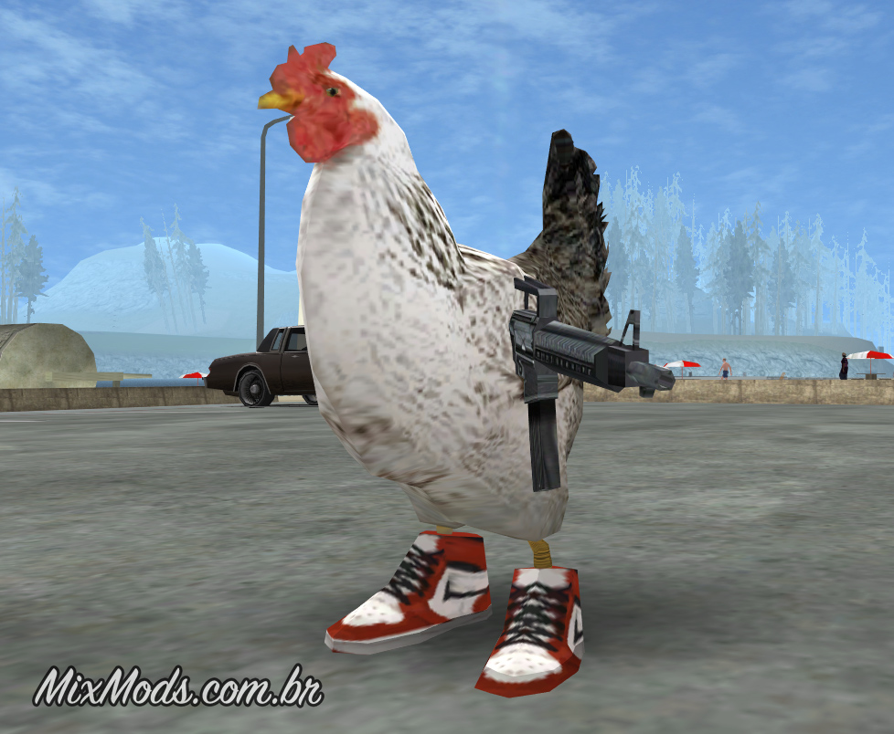
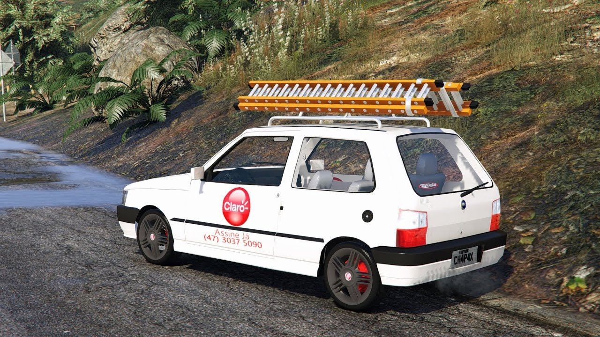
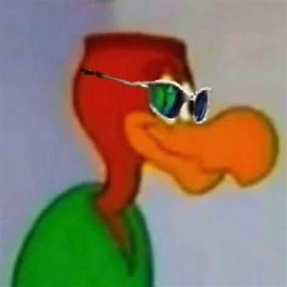

Titulos Cruzeiro Esporte Clube
HOME
HISTORIA
TABELA
UNIFORMES
TITULOS
61 VEZES CAMPEÃO DA RINHA DE GALO

95 VEZES CAMPÃO DA CORRIDA DE UNIN COM ESCADA

17 VEZES CAMPEÃO DE CABELIN NA REGUA

5 VEZES CAMPEÃO DO CALVÃO DE CRIA